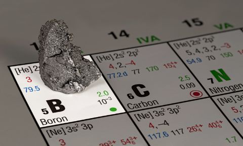
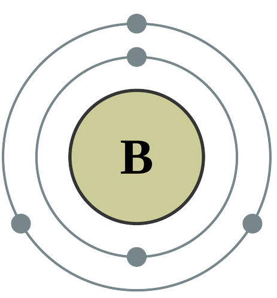
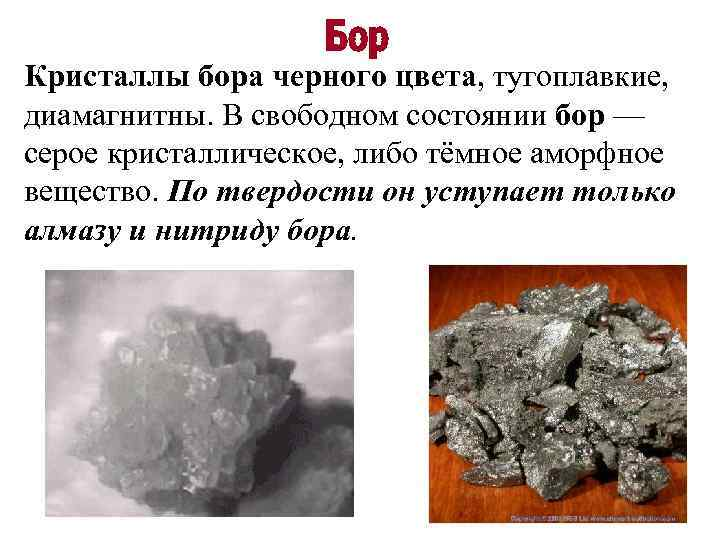

Бор
Бор — химический элемент ; он имеет символ B и атомный номер 5. В кристаллической форме это хрупкий, темный, блестящий металлоид ; в аморфной форме представляет собой коричневый порошок. Как самый легкий элемент группы бора, он имеет три валентных электрона для образования ковалентных связей , в результате чего образуются многие соединения, такие как борная кислота , минеральный борат натрия и сверхтвердые кристаллы карбида бора и нитрида бора .

Природные соединения бора, в основном бура, известны с раннего Средневековья. Бура, или тинкал, ввозилась в Европу из Тибета, её употребляли при ковке металлов, главным образом золота и серебра. От арабского названия буры buraq (бурак) и позднелатинского borax (боракс) произошло название элемента. Бор открыт в 1808 г.: Ж. Гей-Люссак и Л. Тенар выделили элемент из оксида B2O3 нагреванием с металлическим калием, Г. Дэви – электролизом расплавленного B2O3.

Бор используется как компонент коррозионностойких и жаропрочных сплавов, например ферробора – сплава Fe с 10–20 % B, композиционных материалов (боропластиков). Небольшая добавка бора (доли процента) значительно повышает механические свойства стали, сплавов цветных металлов. Бором насыщают поверхность стальных изделий (борирование) с целью улучшения механических и коррозионных свойств. Бор применяют как полупроводник для изготовления терморезисторов. Около 50 % получаемых искусственных и природных соединений бора используют в производстве стекла, до 30 % – в производстве моющих средств. Многие бориды применяют как режущие и абразивные материалы. Ферромагнетик Nd2Fe14B используют для изготовления мощных постоянных магнитов, ферромагнитный сплав Co–Pt–Cr–B – как среду для записи в современных носителях информации. Бор и его сплавы – поглотители нейтронов в производстве регулирующих стержней ядерных реакторов.
В промышленности бор получают из природных боратов: колеманит и иниоит перерабатывают щелочным методом с выделением бора в виде буры, борацит – кислотным методом с образованием ортоборной кислоты, которую при температуре около 235 °С переводят в B2O3. Аморфный бор получают восстановлением буры или B2O3 активными металлами – Mg, Na, Ca и другими, а также электролизом расплава Na[BF4] или K[BF4]. Кристаллический бор – восстановлением галогенидов BCl3 или BF3 водородом, разложением галогенидов и гидридов бора (в основном B2H6) при температуре 1000–1500 °С или кристаллизацией аморфного бора.

Роль бора в животном организме не выяснена. В мышечной ткани человека содержится (0,33—1)·10−4 % бора, в костной ткани (1,1—3,3)·10−4 %, в крови — 0,13 мг/л. Ежедневно с пищей человек получает 1—3 мг бора. Токсичная доза — 4 г.